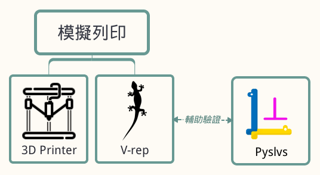
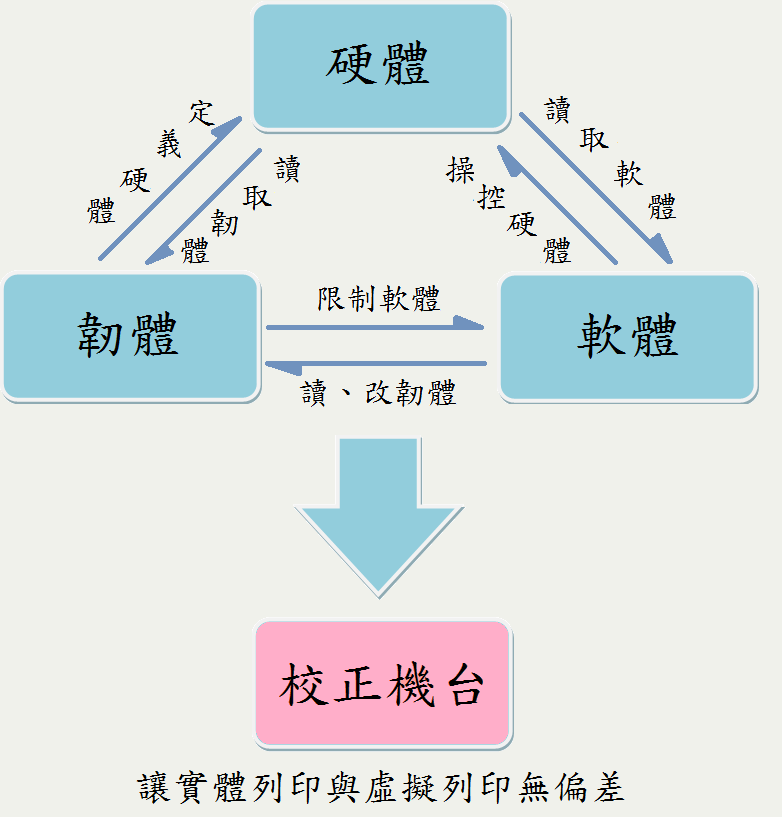
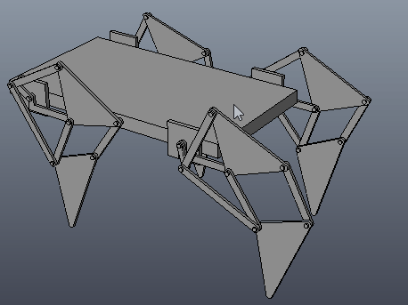
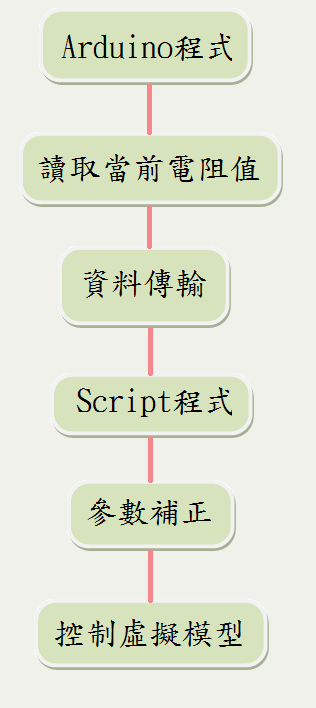
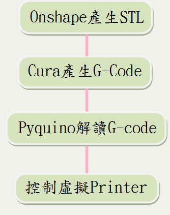
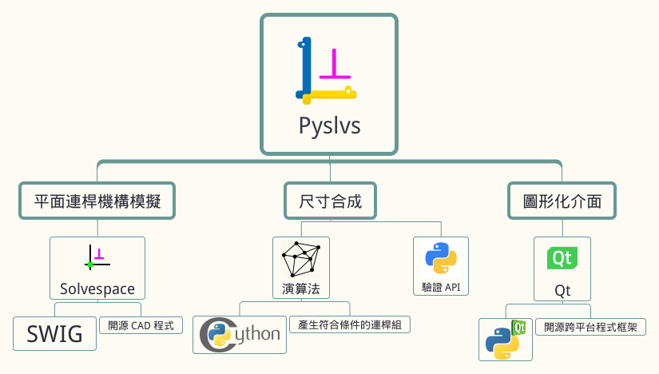

V-rep 在 Delta 3D 印表機虚實整合模擬上的應用
組員
40323218 李冠興
40323230 張 元
40323231 張立昇
40323250 詹偉志
指導老師
嚴家銘 教授
李武鉦 教授
摘要

研究動機
一開始我們透過 Solvespace 研究八連桿機構，並利用 3D Printer 印製零件組裝，但是在印製的過程時常出現問題，導致花費許多時間和材料。 經過討論想到如果有一套能夠模擬 3D 列印的軟體，先經過這套軟體的模擬可以降低錯誤的發生率，也可以提升印製的品質。
印表機實體

Delta 3D-Printer 架構介紹

校正機台

虛擬控制

V-rep - 簡介
V-rep 為 Virtual robot experimentation platform 的縮寫，是一套機器人模擬軟體，讓使用者可以模擬整個機械系統 。
程式語言支援 C/C++、 Python、 Java、 Lua、 Matlab、 Octave 等等，可使用在遠端監控、硬體控制、快速原型驗證、演算法開發與參數調整、安全性檢查、機器人教學與工廠自動化模擬等各種領域。

Onshape - 簡介
Onshape 是一套由前 Solidworks 團隊開發出來的 3D 建模平台，它的優點及特色就是可以線上協同設計，和同伴能夠分工合作，且能達到參數式設計。
Onshape 支援的檔案格式 ：
ACIS、STEP、IGES、CATIA、SolidWorks、Inventor、Pro/E、Rhino與STL等格式。
Onshape - 簡介


Onshape 是一種 Full Cloud 的網路 CAD 設計平台，它的檔案都存在「雲端」 ，提供協同設計的功能，並且可以很容易地從雲上找到其他人公開的模型。
協同設計主要的概念為團隊間的分工合作，大家提供自己的想法或專長，使概念更完善，這部份 Onshape 甚至提供可在平板或手機上使用的功能。
Onshape - 繪製範例


V-rep - 介面介紹

- 視角移動
- 視角旋轉
- 視角縮放
- 視角移動至物體
- 物體定位 (x,y,z)
- 物體旋轉 (x,y,z)
- 開始模擬
- 暫停模擬
- 結束模擬
- 慢速
- 加速
V-rep - 八連桿範例
八連桿機構能在 V-rep 內做模擬，在未來若朝向 仿生機構 研究，使用此軟體是不錯的選擇。

八連桿模擬 與 實際應用
V-rep - Printer校正
虛擬的 Printer 和實體同樣需要校正，補正參數設定於控制程式內部。

V-rep - 內部 Scripts 控制
V-rep 可透過內部 Scripts 編寫控制指令，但要為了到模擬列印，需要與其他裝置或介面通訊。

控制範例 1 - 可變電阻控制噴頭位置
透過三個可變電阻的電阻值變化，控制 V-rep 內 Printer 噴頭的座標位置 。
可變電阻控制噴頭位置 範例影片

控制範例 2 - 六軸感測器控制噴頭位置
這個控制採用 MPU6050 六軸加速度感測器，透過和前範例相同的方式，經由感測器的產生數值變化後，將數值傳送到 V-rep 內部，轉換成噴頭欲移動之座標點。

六軸感測器控制噴頭位置 範例影片

V-rep - Printer控制流程

V-rep - G-Code
補正參數已設置於Pyquino內，不同的機型須配置相對應的補正值。
V-rep - Particles
當噴頭經由 G-Code 得到路徑後，粒子會隨著噴頭的位置改變而產生。

V-rep 列印成果影片

結論

當自己設計的機構能使用自己寫的程式來驗證，並能透過虛擬列印零件、組立完成加以模擬，完全不用消耗任何實體資源，能夠替我們省下許多修正錯誤的時間。
若在未來能夠透過 Pyslvs 設計出最佳的連桿尺寸，並搭配模擬列印及組裝之後的運動模擬，最後再利用 Printer 列印出來，就可以離最佳化設計更進一步發展。
套件開發


Planar Linkages Simulation
Dimensional Synthesis
與 Solvespace 比對

平面連桿模擬

尺寸合成
轉入 V-rep